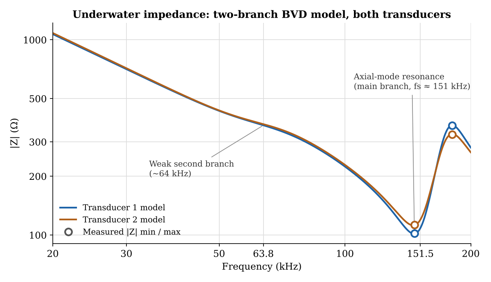
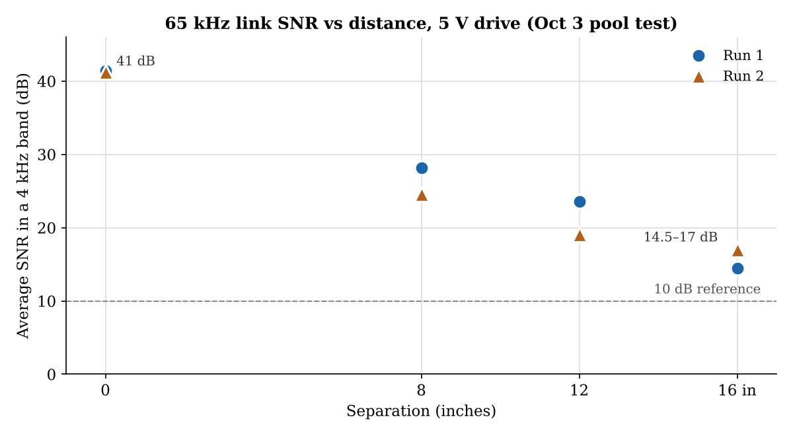
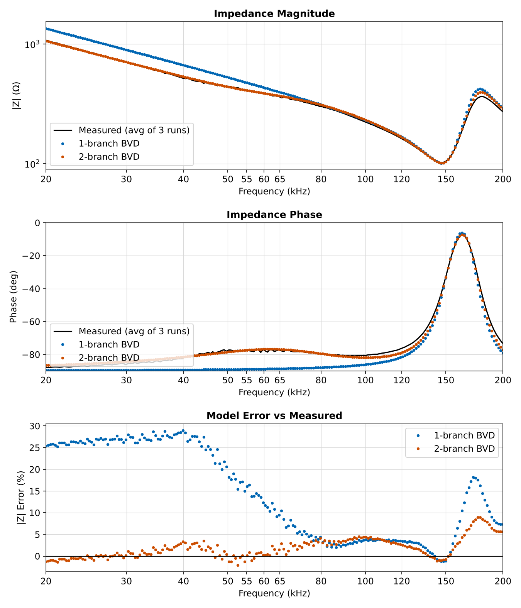
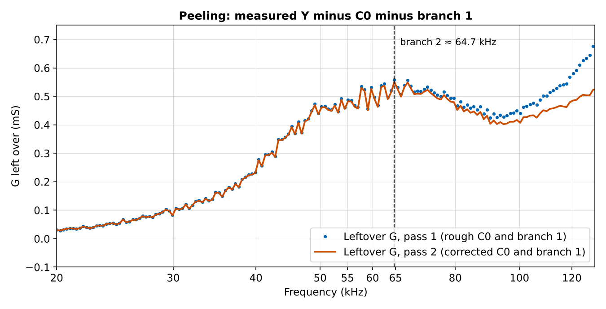
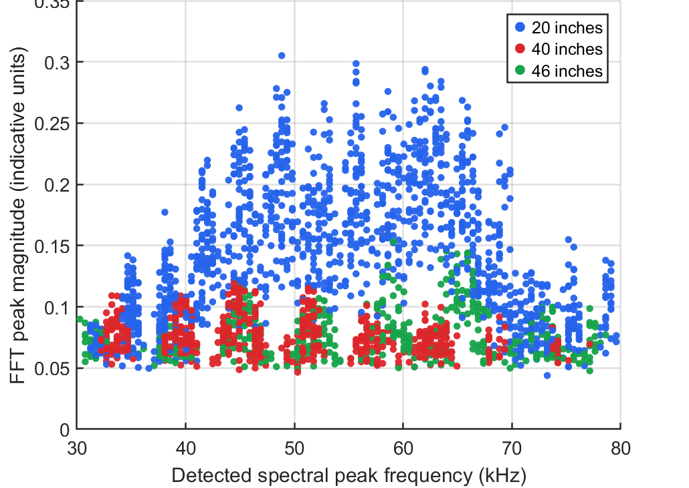
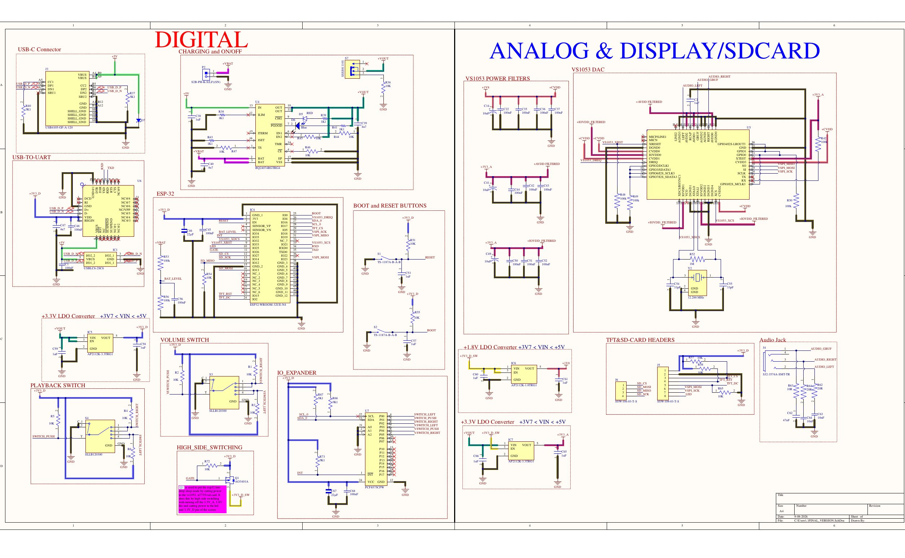

Acoustic modem
With the ARVP RoboSub team, building an FSK modem so the subs can talk underwater. I’ve done transducer testing and modelling in MATLAB, and now the transmit circuit. The modem in detail
Right now I’m on the transmit circuit for ARVP’s underwater modem, and the second version of my MP3 player board.
Third-year electrical engineering co-op student at the University of Alberta. These are notes on what I’m building, what broke and how I worked it out.
Read the latest noteOn the ARVP RoboSub team I modelled our underwater transducers as circuits. One resonance branch missed the measured impedance by 18%, because a second, weaker mode near 65 kHz was hiding underneath. To find that mode I had to subtract the first one, and the first one couldn’t be measured cleanly until the second was out.
Peeling them apart, twice, in MATLAB brought the miss down to 3%.
A Butterworth–Van Dyke model treats a piezo transducer as a capacitor, C0, in parallel with one series R–L–C branch for each way it can vibrate.
Solid line: measured, Transducer 1, Oct 17 sweep. Dots: one-branch model. Dashed: two-branch model.


ARVP acoustic modem



With the ARVP RoboSub team, building an FSK modem so the subs can talk underwater. I’ve done transducer testing and modelling in MATLAB, and now the transmit circuit. The modem in detail


My own offline music player: an ESP32 and a VS1053B decoder on a 4-layer board I designed in Altium, in a printed case. About 17 hours per charge. The board and firmware

Course project: motor identification, cascaded controller design and hardware-in-the-loop testing to balance a ball on a motor-driven beam. Settles in under 2 s. The controller design

Fixed-point PID in RTL. It passed 6,980 self-checked vectors, then a closed-loop simulation exposed a deadband limit cycle, which I fixed. How I found the bug
ESP32 · low-power firmware
Heat safety wearableA helmet-mounted, battery-powered temperature monitor that warns workers of heatstroke risk. The C firmware sleeps between 60 s readings and escalates through a 5-state alert machine. I also tested LoRa and GPS modules for sending alerts from sites without Wi-Fi.
In planning
Long-range LoRa roverA three-person build: an STM32 mothership car that relays LoRa driving commands to a small, fast scout car, with cameras on both.
I’m a third-year electrical engineering student in Edmonton. Most of my time outside class goes to the RoboSub team’s acoustic modem and to my own MP3 player board. The part I like best is when a measurement doesn’t match the datasheet and I have to work out why.
Outside of school you’ll usually find me snowboarding, rock climbing or road cycling.
Experience
Autonomous Robotic Vehicle Project (ARVP) · Underwater Acoustic Modem · Edmonton, ABJul 2026 – Present
North American Construction Group · Fort McMurray, ABApr – Dec 2025
University of Alberta · GPA 3.4 / 4.0Expected Apr 2029
Skills
Working on something similar, have a question about one of these projects, or have a co-op opening? I’d be glad to hear from you.
dhruvil2@